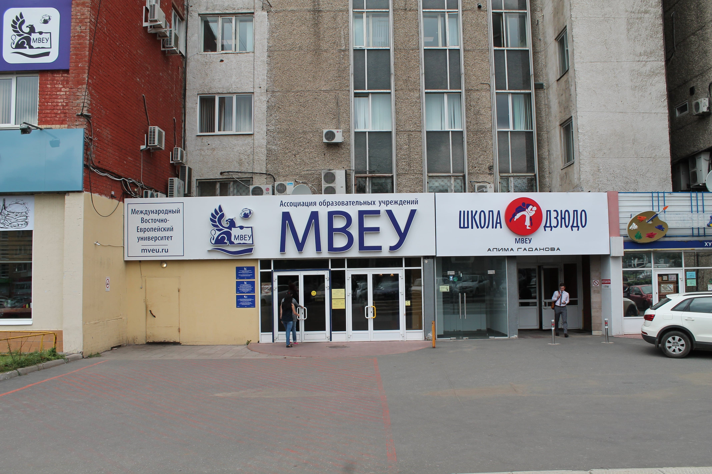

Какие достопримечательности посетить
МКПО и ВУЗЫ Удмуртии
Куда сходить погулять
Где поесть
Где остановиться
Menu
Средне-специальные учебные заведения Удмуртии
Республиканский медицинский колледж им. Ф.А. Пушиной
×

Ссылка на сайт МВЕК - https://mvekspo.ru/">
МВЕК - Международный Восточно-Европейский колледж
×
КГиМС - Колледж государственной и муниципальной службы
×
АПОУ УР "Ижевский политехнический колледж"
×
АПОУ "ИПЭК" Ижевский промышленно-экономический колледж
×
РМК - Республиканский музыкальный колледж
×
Филиал ФГБОУ ВО "СамГУПС" в г. Ижевск
×
ИМТ - Ижевский монтажный техникум
×